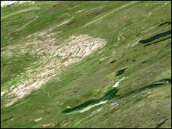

Climate models often rely on freeze-up and break-up dates of large water bodies and lakes. It is important to know these dates with a relatively high precision, preferably within 1-2 weeks of the actual event.
 To achieve that end, this project attempts to create multi-day and multi-platform composite MODIS (Moderate Resolution Imaging Spectroradiometer) images to minimize the effect of cloud cover and accurately discern the freeze-up and break-up dates. The selected study area encompasses the area surrounding Great Bear Lake and Great Slave Lake in northern Canadauses. MODIS product (tile h02v12) was used for analysis.
Composite images take advantage of the orbital characteristics of the Terra and Aqua platforms to provide additional data that can decrease the effect of clouds in the images. Terra crosses the equator at 1030 local time and is followed by Aqua which crosses the equator at 1330 local time. During this period of time, cloud motion can occur which may reveal land surface features to MODIS-Aqua that were hidden by clouds to MODIS-Terra.
This figure shows the lake ice retreat for spring for the full MODIS tile. The most effective method for determining ice advance and retreat was to generate a two dimensional time series for these events. This was accomplished through the Advance/Retreat function that searched through the available images for the first or last occurrence of snow or ice (both were computed) for that particular pixel. When that occurrence was found, its date was placed at that location. The resulting image made it possible to track the motion of freeze up and break up as they occurred. From this it was determined that most of the lake ice melted on or around day 201. There were several areas on the southern portion of the lake that melted earlier, with one area melting around day 164 and another around day 174. This is consistent with other studies, which show the ice melting out of these two regions before the rest of the lake.